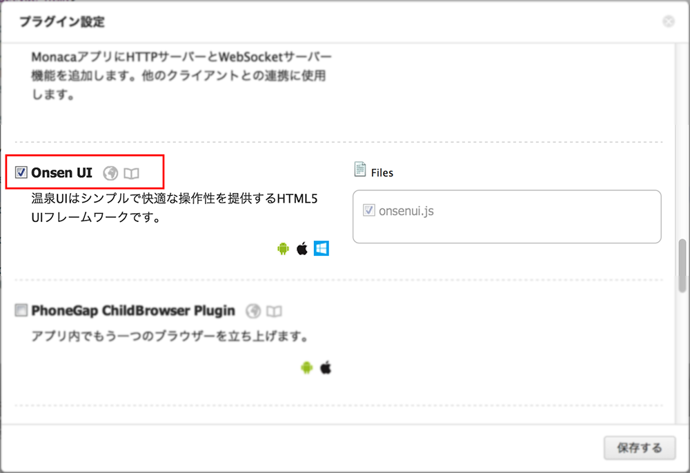

新しいプロジェクトを作成する
1. ダッシュボードに移動
ダッシュボードで 新しいプロジェクト をクリックする。

2. Onsenテンプレートを選択する

3. さらなる開発
Onsen UIのプロジェクトの作成はこれで完了です。 使い方やサンプルはドキュメントを参照してください。
既存のプロジェクトにOnsen UIプラグインを追加する
1. プロジェクトにOnsen UIプラグインを設定
メニューの設定 -> プラグイン設定を選択します。

プラグイン設定画面でOnsen UIプラグインにチェックします。 
2. Onsen UIプラグインの有効化
htmlタグの"ng-app"要素を以下のように設定します。
<html ng-app="myApp">scriptタグ内でOnsen UIプラグインのロード処理を記述します。
angular.module('myApp', ['onsen.directives']);
3. さらなる開発
Onsen UIプラグインの設定はこれで完了です。 使い方やサンプルはドキュメントを参照してください。